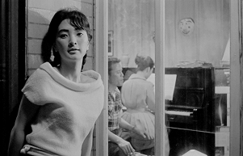
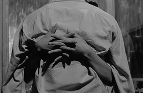
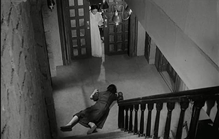

방직공장의 음악부 선생 동식(김진규)은 금천에서 일어난 살인사건 기사에 흥미를 보인다. 아내(주증녀)의 몸이 쇠약해지자 동식은 경희에게 부탁해 하녀(이은심)를 소개받는다. 임신한 아내가 친정에 다니러 간 어느 날, 경희는 동식에게 사랑을 고백하지만 모욕을 당하고 쫓겨난다. 이를 창밖에서 몰래 지켜보던 하녀는 동식을 유혹한다. 하녀는 임신을 하게 되고, 이 사실을 알게 된 아내는 하녀를 설득해 계단에서 굴러 낙태하게 만든다. 아기를 잃은 하녀는 점점 난폭해지고 결국 동식 부부의 아들 창순(안성기)을 계단에서 떨어져 숨지게 한다. 하녀가 이 모든 사실을 공장에 알리겠다고 협박하자 아내는 집과 가족을 지키기 위해 동식을 2층에 있는 그녀의 침실로 보낸다. 결국 동식은 하녀와 함께 자살하기 위해 쥐약을 먹고, 죽어가는 하녀를 뿌리치고 아내의 곁으로 돌아와 숨을 거둔다. 다시 영화의 첫 장면의 신문기사를 읽는 동식과 아내의 모습으로 돌아온다.